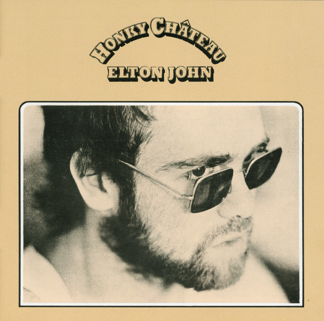
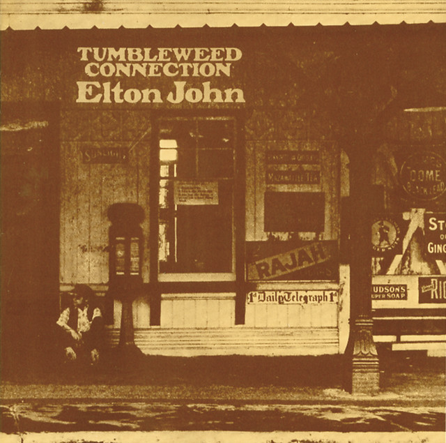
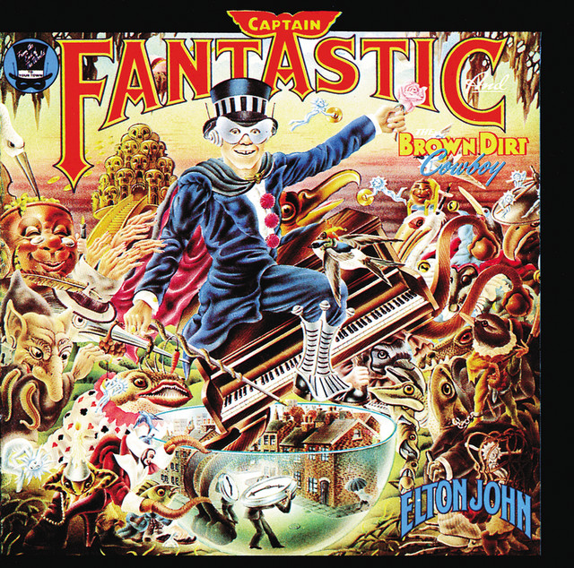
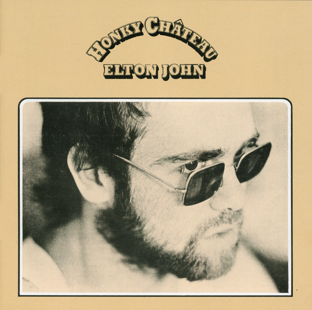
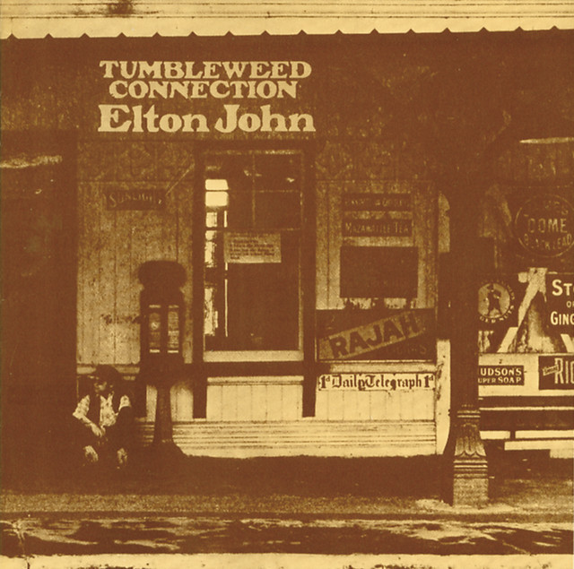
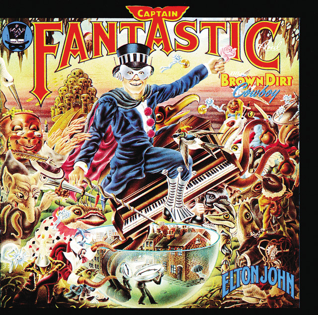
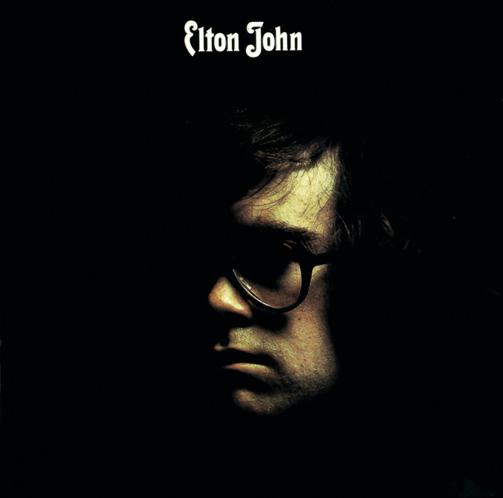

Historia

Elton John es un cantautor i pianista britanic que va començar la seva carrera a finals dels anys 60.
Es conegut per les seves balades pop i rock, aixi com per les seves extravagants actuacions en directe i la seva col·laboracio amb Bernie Taupin.
Discografia
· Goodbye Yellow Brick Road (1973)
· Honky Château (1972)
· Tumbleweed Connection (1970)
· Captain Fantastic and the Brown Dirt Cowboy (1975)
 





Integrants

· Dee Murray: bajista (1968-1975, 1982-1988)
· Nigel Olsson: bateria (1969-1978, 1982-)
· Davey Johnstone: guitarra, teclats i cors (1971-)
· Ray Cooper: percusio (1972-)